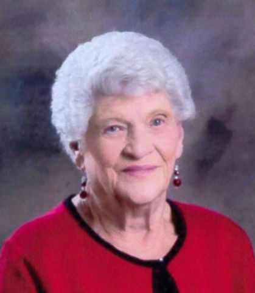
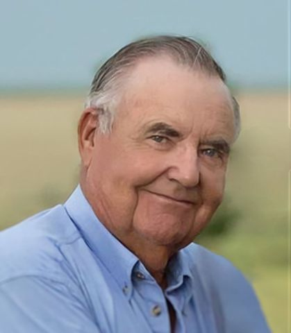
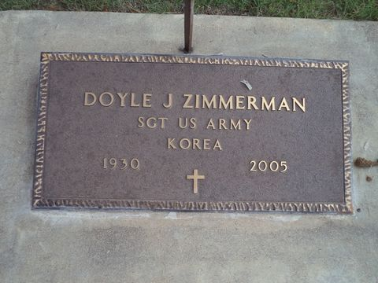
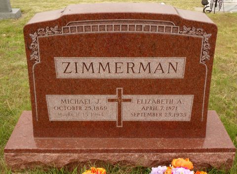
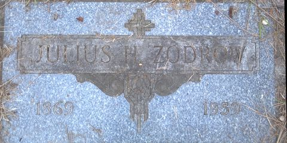
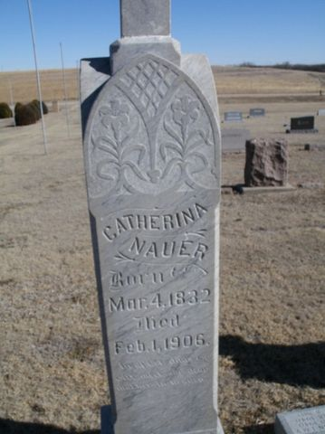

Zimmerman–Dible Ancestry
A sourced working artifact for all four grandparent lines: Doyle Jule Zimmerman, Evelyn Delores Mundell Zimmerman, William J. "Bill" Dible, and Donna Lea Connelly Dible. This is a public-record draft, not a final proof tree.
Four Grandparent Anchors
Documented
View branch
Documented
View branch
Documented
View branchDocumented
View branchHow To Read This
The goal here is breadth plus honesty. I included every branch I could support from public sources, then marked the weak points rather than filling holes with unsourced guesses. "Generation 1" is one of the four grandparents. Generation 6 is that grandparent's 3x-great-grandparent layer. If you count from you instead, shift the numbers down by two generations.
Supported by obituary, cemetery, indexed record, or a specific record collection.
Repeated in public tree/index data and consistent with locations/dates, but still wants a primary record.
Useful compiled genealogy or tree clue. Treat as a search target, not final proof.
The trail is tattered on open web. This is where a paid image, local record, or archive pull is needed.
Where The Family Joins
The map shows only places where the evidence is strong enough to stand on: documented events and high-confidence life events. Each line carries its own plate at the head of its branch below; this shared plate shows the northwest Kansas country where all four lines converge.
Full coordinates, confidence labels, open targets, and geospatial records live in ancestry_geospatial.geojson.
Doyle Jule Zimmerman Branches
Zimmerman Surname Line
Kansas to Nebraska to Mainhardt/Wuerttemberg. The German locality is the best breakthrough so far.


Zodrow / Baier Line
Strong enough to carry Cecilia back one more generation, then it thins quickly.
Usable Zodrow jurisdiction stack: literal cemetery clue = Sabanka, Prussia; working village target = Neu Lebehnke / Nowa Lubianka; parish and civil registry target = Lebehnke / Stara Lubianka; county-level target = Kreis Deutsch Krone; district = Regierungsbezirk Marienwerder; province = Westpreussen; modern jurisdiction = Nowa Lubianka, Pila County, Greater Poland Voivodeship, Poland.
| Layer | Use this search value | Why it matters |
|---|---|---|
| Literal clue | Sabanka, Prussia | Keep this wording because it is what the Leoville Calvary Cemetery transcription reports for John M. Zodrow's birthplace. |
| Village target | Neu Lebehnke / Nowa Lubianka | This is the best current town-level candidate, not a proved correction; the Deutsch Krone Project shows a local Zodrow cluster there. |
| Parish and civil registry | Lebehnke / Stara Lubianka | Meyers and AGOFF point Neu Lebehnke searches to Lebehnke for Catholic church, Protestant church, and Standesamt records. |
| County / Kreis | Kreis Deutsch Krone | Use county-level catalogs when village or parish books are missing, indexed under a wider district, or held as land/probate files. |
| Administrative stack | Regierungsbezirk Marienwerder, Westpreussen, Preussen | This is the historical jurisdiction path to use in German gazetteers, Polish archive catalogs, and Prussian civil-record descriptions. |
| Modern locator | Nowa Lubianka / Stara Lubianka, Pila County, Greater Poland Voivodeship, Poland | Use these names for modern maps, Polish repositories, and archive-place searches. |

Nauer Line
This is Michael John Zimmerman's wife's line. It runs from Kansas back into Waterloo County, Ontario, with a possible earlier Nauer cluster in Wilmot, St. Clements, and Carrick Township.

Evelyn Delores Mundell Zimmerman Branches
Mundell / Rust / Cantwell Line
Evelyn's obituary proves the Homer Mundell and Marjorie Clemans link. Donald Mundell's obituary and public indexes make Homer's older Mundell line a usable lead, but Donald's Leora/William Rogers wording means the sibling set may involve remarriage or half-sibling context.
Clemans / Flaherty Line
The Marjorie Clemans side has a useful sibling-index lead and now a stronger Flaherty cluster, but it still needs a direct marriage, birth, census, or obituary record tying Marjorie to the Talmadge Clemans household. There is also a separate Indiana Marjorie Opal Clemans who should not be merged into this line without hard proof.
William J. "Bill" Dible Branches
Dible Surname Line
This branch carries well into early Pennsylvania, then fades into a German/English surname-origin question.
Long / Sleight / McClelland Line
This line has useful Find a Grave biography data and reaches into Lincolnshire, England on the Sleight side.
Donna Lea Connelly Dible Branches
Connelly / Durham Line
The Kentucky-to-Kansas Connelly/Durham connection is solid enough to move, but James Connelly's parents remain open.
Claar / White / Stropes Line
This is the deepest open-web branch so far. It reaches the Pennsylvania Claar/Klar compiled genealogy, but older layers should be validated.
Record Targets That Would Move The Tree
| Priority | Branch | Record to Pull | Why it matters |
|---|---|---|---|
| 1 | Zimmerman / Zinkle | Archion Mainhardt Familienregister 1808-1918 Band 25, especially Huetten / Parzellen von Huetten / Wuerttemberger Hof. | Likely one page names the German household, parents, children, and emigration notes. |
| 2 | Zimmerman / Zinkle | Archion Mainhardt Eheregister 1850-1870 Band 15, marriage around 1864. | German marriage records often name both fathers and sometimes mothers. |
| 3 | Zimmerman | 1910/1920 census or death certificate corroborating Leonard Henry Zimmerman as son of Michael John Zimmerman Sr. and Elizabeth Nauer. Also Doyle's April 2005 obituary: the Colby Free Press PDF archive has a server-side gap covering 5-20 Apr 2005, so pull it from a funeral-home or Legacy mirror, or from microfilm. | The public cemetery-child list now supports the link, but a primary household or certificate record would harden the American-to-German chain. |
| 4 | Zodrow / Grams / Baier | Leoville, Decatur County, Kansas Catholic records; Marquette County, Wisconsin marriage/naturalization records for John Zodrow and Antonette Grams; Neu Lebehnke / Nowa Lubianka village leads; Lebehnke / Stara Lubianka Catholic/Lutheran parish and civil registry records; Kreis Deutsch Krone county-level records; Lebehnke banns collateral entries for Christoph Zodrow/Rosalia Zaske and Andreas Zodrow/Justina Reinke; Polish archive land/mortgage files for Johann Zodrow's Neu Lebehnke property; Grams parish variants. | The Calvary Cemetery transcription gives the first specific Zodrow European place clue. Neu Lebehnke/Nowa Lubianka now supplies a village target, Lebehnke/Stara Lubianka supplies parish and civil-registry targets, and Kreis Deutsch Krone supplies county context; but the Sabanka-to-Lebehnke connection and the parents of John Zodrow, Antonette Grams, and Ernestina Baier remain unproven. |
| 5 | Mundell / Clemans / Adolph | Homer Mundell and Marjorie Clemans marriage/divorce record if any; Evelyn's birth record; 1940/1950 census households; Walter William Mundell and Frances Rust marriage record at Smith Center, Kansas in 1910; Smith County birth/census/probate records for Frances Rust, William Bryan Rust, Clarence Aison Rust, possible parents John F. Rust and Ethel B. Rupert, and the Reamsville/Pleasant Hill Cemetery Rust cluster; Winona/Logan County school, census, guardianship, cemetery, probate, and newspaper records for Evelyn living with grandmother Frances Adolph; Frances Adolph remarriage/death records and any Lyle Strawn/Beloit records; Marjorie Clemans record tying her directly to Talmadge Dewitt Clemans and Margaret Ellen Flaherty; records excluding the Indiana Marjorie Opal Clemans / Clay V. Stamper same-name collision; St. Louis marriage record for Talmage Clemans and Margaret Flaherty on 16 Apr 1921; Margaret and Edward Flaherty birth/death/census records to test Martin Flaherty and Kate Flaherty as Margaret's parents; records resolving Leora Young/Rogers in the sibling group; Sarah Alice Cantwell proof records. | The Mundell paternal line now has a usable chain, the Rust side has a specific John F. Rust/Ethel B. Rupert candidate cluster to test, and the Flaherty side has a more specific Martin/Kate parent cluster. The Frances Rust/Adolph/Strawn identity, Clemans parentage, Homer/Marjorie/Leora household structure, and Cantwell maternal line still need direct records. |
| 6 | Nauer / Koeberger | Waterloo County, Ontario census/church/civil records for Elizabeth Catherine Nauer and siblings; 1871 Waterloo County and 1880 Cawker/Mitchell County census images for Thomas and Catharine; St. Clements Catholic registers; Wilmot Township/New Prussia and Carrick Township/Bruce County records for Johann Lorenz Nauer and Dorothea Meyer/Mary Dorothea Wand; Thomas A. Nauer probate or burial record. | Would test the Lorenz/Dorothea possible-parent lead, resolve the Meyer/Wand naming conflict, and may reveal the European parish behind the Ontario Nauer family. |
| 7 | Dible / Heckman / Moore / Haden | Armstrong and Westmoreland County, Pennsylvania probate, land, church, and cemetery records for John Albert Dibler/Dible, Catherine Heckman, Jacob Dible, Susannah Allshouse, Philip Heckman, Maria Esther Otterman, and Catherine Moore; specifically Kiskiminetas Township records for Catherine Moore and Zephaniah Dible's household. Cumberland County, Kentucky census, marriage, probate, deed, and cemetery records for Elizabeth J. Haden, Andrew Jackson Haden, Sophia Reid/Reed, Richard D. Haden, and Sarah "Sally" Lewis Tompkins; Albemarle County, Virginia marriage bond for Richard D. Haden and Sally Tompkins; Reed/Reid household records for possible Robert Reid and Edwin Reid. | Would test the compiled Dible/Allshouse and Heckman/Otterman leads, resolve Catherine Moore's conflicting dates, verify the Haden/Reid parent lead, harden the Richard/Sally Gen 6 Haden layer, and could push the Dible and Heckman lines to their immigrant layers. |
| 8 | Long / Sleight / McClelland / Love | Pike County, Illinois probate/church records for Rev. Robert Long and Robert Nelson Long; Lincolnshire parish records for John Gaunt Sleight; Greene and Fayette County, Pennsylvania records for Alexander/Sarah and Dorsey McClelland; Athens County, Ohio marriage/probate/church records for Dorsey McClelland, Lovina Love, Thomas Love, Hannah James, and Alexander McClelland; Osborne County, Kansas death/burial records for Lovina; Selden Cemetery records for Dorsey/Ora/Almeda. | Would prove or reject the McClelland/Hoge and Love/James Gen 5 leads, and it would convert the current Pennsylvania-Ohio-Kansas route from compiled evidence into record-backed geography. |
| 9 | Connelly / Durham | James Connelly probate/death record and Kentucky marriage/census records; David Monroe Durham and Virginia Ann Ford original Menard County, Illinois marriage record; Hopkins/Muhlenberg County, Kentucky death, cemetery, probate, and land records to resolve David's 1832/1897 versus 1829/1887 identity variants; John Laborn Ford/Lucy Ann Staples marriage record; Friendship Missionary Baptist Church records; Ford/Staples/Turner probate and land records in Muhlenberg/Hopkins counties; Caswell County, North Carolina Ford/Davis records for the John Laborn Ford Sr. versus Levi Ford parentage conflict. | James Connelly's parents and David Monroe Durham's parents remain major open edges; the Ford/Staples layer now has a 1911 son-authored family letter, but the younger John Laborn Ford's father is still a conflict between family tradition and the later Levi Ford theory. |
| 10 | Claar / Hoyle / White | Decatur County, Kansas original marriage record for Samuel D. Claar and Maggie M. Hogle / Mary Margaret Hoyle, dated 5 Oct 1895 at Oberlin; then Jackson County, Ohio and Bedford County, Pennsylvania original records for Henry Claar, Electa White, Samuel Claar, and Lydia Stropes. | The Claar line extends deepest online, but the spouse surname conflict at Mary Margaret Hoyle / Maggie M. Hogle must be resolved before the Hoyle/Hogle parents are attached. |
Source Ledger
Zimmerman & Zinkle 16 sources
- Doyle and Evelyn Zimmerman 50th anniversary announcement, Colby Free Press, 11 Jun 2004. Family-supplied announcement establishes marriage on 14 Jun 1954 at Sacred Heart Catholic Church, Colby; documents Doyle in Selden until 1953, Evelyn in Winona until 1954, the couple meeting in January 1954, and the Hi-Plains Implement career from 1953 through retirement in June 1999. Contradicts the compiled 14 Jun 1953 marriage date.
- Evelyn Delores Zimmerman obituary, Baalmann Mortuary. Names Homer and Marjorie Clemans Mundell; states marriage to Doyle J. Zimmerman; says Evelyn was raised by grandmother Frances Adolph and graduated from Winona High School.
- Donald Lynn Mundell obituary, Fry Funeral Home. Names Homer Claire Mundell in Donald's parent line and places Evelyn Zimmerman, Marilyn Ayer/Ayers, and Judy Bastian in the same sibling group.
- Doyle Jule Zimmerman, Find a Grave. Cemetery profile names Leonard Henry Zimmerman and Cecilia Antoinette Zodrow Zimmerman as parents and Evelyn Delores Mundell Zimmerman as spouse.
- 1880 Madison County, Nebraska census index. Lists John Zimmerman household in Norfolk, including Catherine, John, Michael, Paul, Baptist, and Louisa.
- Michael John Zimmerman Sr., FamilySearch. Public index gives birth at Wuerttemberger Hof/Mainhardt.
- Elizabeth Catherine Nauer, FamilySearch. Public index gives marriage to Michael John Zimmerman Sr. at Cawker City on 19 Nov 1895.
- Moritz Thomas Nauer, Find a Grave. Cemetery profile lists Thomas A. Nauer and Catherina Koeberger Nauer and includes Elizabeth Catherine Nauer Zimmerman among siblings.
- Elizabeth Catherine Nauer Zimmerman, Find a Grave. Cemetery profile names Thomas Nauer and Catherine Koeberger as parents and lists Leonard Henry Zimmerman among Michael and Elizabeth's children.
- Selden Cemetery, KSGenWeb. Lists Michael J. and Elizabeth A. Zimmerman on the same stone; also shows Nauer burials nearby. The same transcription lists Dorsey O. McClelland, Ora E. McClelland, and Almeda O. Dible on identical stones/same concrete base, making it an important Long/McClelland collateral-location source.
- John Paul Zimmerman, FamilySearch. Public index for the likely immigrant ancestor.
- Paul Michael Zimmerman, FamilySearch. Public index supports Wuerttemberger Hof/Mainhardt birth locality.
- Archion Mainhardt Familienregister 1808-1918 Band 25. Best next record target for Zimmerman/Zinkle.
- Archion Mainhardt Eheregister 1850-1870 Band 15. Marriage record target for John Paul Zimmerman and Catherine Zinkle/Zinkl.
- Archion Mainhardt Taufregister 1859-1877 Band 9. Baptism target for Michael and Paul Zimmerman.
- Archion Mainhardt Taufregister 1835-1843 Band 7. Possible John Paul Zimmerman baptism target.
Nauer & Koeberger 5 sources
- Emma Catherine Nauer, FamilySearch. Public sibling index gives Thomas A. Nauer and Catherina Marie Koeberger as parents.
- Catherina Koeberger Nauer, Find a Grave. Cemetery profile gives birth 4 Mar 1832, death 1 Feb 1906, and burial at Saint Joseph Cemetery, New Almelo, Norton County, Kansas.
- The German Catholic Settlers of Waterloo County PDF. Compiled Waterloo-area lead placing Thomas and Catharine Nauer in Waterloo County in 1871 and Cawker, Mitchell County, Kansas by 1880; also proposes Lorenz Nauer and Dorothea Meyer as possible parents for Thomas.
- Thomas A. Nauer, WikiTree. Compiled lead naming Thomas as son of Johann Lorenz Nauer and Mary Dorothea Wand; use as a target, not proof, because the Waterloo PDF uses Dorothea Meyer, widow Wand/Wandt.
- New Prussia, Ontario locality context. Wilmot Township settlement context for Rhenish Prussian Catholic families and later movement toward Bruce County; useful geographic context for the Nauer search, not a direct proof record.
Zodrow, Grams & Baier 15 sources
- Albert L. Zodrow, FamilySearch. Public index names Julius Henry Zodrow and Ernestina Baier as parents.
- Julius Henry Zodrow, Find a Grave. Cemetery profile links Julius to John Zodrow and Antonette Grams.
- John Zodrow, FamilySearch. Public index gives birth in Prussia/Germany and children with Antonia Grams.
- Antonette Grams Zodrow, Find a Grave. Cemetery profile gives birth in Poland and burial in Leoville, Decatur County, Kansas.
- Leoville Calvary Cemetery transcription, KSGenWeb. Lists John M. Zodrow, 29 Jun 1843-15 Mar 1915, with birthplace noted as Sabanka, Prussia.
- Neu Lebehnke / Nowa Lubianka, Kartenmeister. Locality candidate for the Sabanka problem; gives Kreis Deutsch Krone, Westpreussen, modern Nowa Lubianka, coordinates, and Catholic/Lutheran parish plus civil registry at Lebehnke.
- Neu Lebehnke, Meyers Gazetteer. Gazetteer entry identifies Neu Lebehnke as a village in Deutsch Krone, Marienwerder, Westpreussen, Preussen, with Standesamt at Lebehnke Kr. Deutsch Krone.
- Lebehnke Kr. Deutsch Krone, Meyers Gazetteer. Gazetteer entry identifies Lebehnke as village and estate in Kreis Deutsch Krone with Catholic and Protestant parish churches.
- Kreis Deutsch Krone parish/civil registry table, AGOFF. 1885 locality table lists Neu Lebehnke with evangelical church, Catholic church, and Standesamt all at Lebehnke.
- Standesamtsbezirk Lebehnke, AGOFF. Civil registry district overview says Standesamtsbezirk Lebehnke existed 1874-1945 and included Neu-Lebehnke.
- Nowa Lubianka place page, Deutsch Krone Project. Shows Neu Lebehnke / Nowa Lubianka and a local Zodrow cluster; useful as locality context, not proof that John M. Zodrow was born there.
- Lebehnke Catholic banns abstract, 1874-1925. Compiled transcription from the Lebehnke parish banns; includes Neu/Alt Lebehnke Zodrow collateral entries naming Christoph Zodrow, Rosalia Zaske, Andreas Zodrow, and Justina Reinke.
- Szukaj w Archiwach catalog, Neu Lebehnke land file. Catalog search result references a Johann Zodrow property/mortgage and dismemberment file in Neu Lebehnke No. 100, dated 1860-1873; this is a collateral target, not yet John M. Zodrow proof.
- Hedwig "Hattie" Zodrow Schroer, Find a Grave. Sibling list includes Julius Henry Zodrow.
- Albert Zodrow, Find a Grave. Memorial says Albert was son of John Zodrow and Antonette Grams; used here only as indirect evidence for Julius's likely parents.
Mundell, Clemans, Rust & Flaherty 22 sources
- Evelyn Delores Mundell Zimmerman, Find a Grave. Cemetery memorial, 1935-2023. Bio text copies the Baalmann obituary verbatim, including the erroneous June 14, 1953 marriage date, so it is not an independent witness for the marriage year.
- Walter William Mundell, FamilySearch. Public index ties Walter to John Pryor Mundell and Sarah Alice Cantwell and lists Homer Clair Mundell among children.
- Sarah Alice Cantwell Mundell forum post, Genealogy.com archive. Compiled correspondence lead saying Walter William Mundell married/divorced Mary Frances Rust and their son was Homer Clair Mundell.
- Walter William Mundell, FamilySearch. Public index gives Frances Rust as spouse, 1910 marriage at Smith Center, Kansas, and children Homer Clair, Rex, and Erma.
- Barnabas "Barney" Cantwell, FamilySearch. Public index and snippets connect Sarah Alice Cantwell to the Barnabas Cantwell family and name Thomas Cantwell Jr. and Jemima Kelley as Barnabas's parents.
- Cantwell forum thread, Genealogy.com archive. Compiled lead giving Thomas Cantwell Jr. and Jemima Kelley as Barnabas's parents and pushing the line toward William Cantwell and Margaret O'Brien; unproven here.
- Mary Frances Rust forum post, Genealogy.com archive. Gives the clue that Mary Frances Rust went by Frances, was born 6 Jun 1894 possibly in Smith County, Kansas, had a brother William/Bill Rust with wife Viola, divorced Walter William Mundell, married a man surnamed Adolph, then after his death married Lyle Strawn and lived in Beloit, Kansas.
- William Bryan Rust, Find a Grave. Search-result sibling list includes Mary Frances Rust Strawn, 1894-1984, and Clarence Aison Rust; useful for testing the William/Bill Rust brother clue.
- Clarence Aison Rust, Ancestry search-result lead. Snippet gives Clarence Aison Rust, born 7 Jan 1896 in Reamsville/Smith County, Kansas, died 6 Aug 1970 at Smith Center, with father John F. Rust and mother Ethel B. Rupert.
- Reamsville Cemetery, Interment.net. Smith County cemetery transcription gives the local Rust cluster, including F. John Rust, 1870-1909, John A. Rust, 1842-1916, and Nomdje N. Rust, 1855-1934.
- John Aissen Rust, Find a Grave. Search-result child list includes F. John Rust; use only as a candidate link until Smith County records prove Mary Frances Rust's parents.
- NCES Logan County public school search. Current school locator still lists Winona High in Winona, Logan County, Kansas; useful as a modern locality check for the Frances Adolph / Winona High research target.
- John Pryor Mundell, Find a Grave. Cemetery profile links spouse Sarah Alice Cantwell Mundell and child Walter William Mundell.
- OCCGS Harvey Mundell Civil War Veterans Project PDF. Four-page compiled profile giving Harvey's April 1837 Clinton County, Indiana birth, parents John Mundell and Deborah Elmore, wife Elizabeth Jane Brown, children including John P. Mundell, Civil War service, and census/source trail.
- St. Charles County Historical Society genealogy page 213. Compiled Harvey William Mundell page with John Mundell/Deborah Elmore parentage, Elizabeth Jane Brown marriage, Civil War service, and census trail; use as a pointer to primary records.
- Harvey William Mundell, FamilySearch. Public index lead naming John Mundell and Deborah Elmore as parents.
- Genevieve Clemans, FamilySearch. Public index names Talmadge Dewitt Clemans and Margaret Ellen Flaherty as parents, says Genevieve was born 15 Jan 1925 in Minnesota, and lists Marjorie Clemans as a sibling.
- Talmage D. Clemans, Ancestry 1940 census profile. Search-result lead gives parents Roland Clemens and Ella C./Ellen Martin; used only as a provisional lead until Marjorie Clemans is tied directly to the household.
- Margaret Ellen Flaherty Clemans, Find a Grave. Memorial gives about 1901-1986 and a St. Louis marriage note for Talmage Clemans and Margaret Flaherty on 16 Apr 1921.
- Edward J. Flaherty, Find a Grave. Cemetery sibling lead listing Margaret Ellen Flaherty Clemans; Edward's page names Martin Flaherty and Kate Flaherty as parents, making them a specific parentage lead for Margaret pending direct proof.
- Marjorie Opal Clemans, FamilySearch. Same-name collision candidate: born in Liberty Mills, Indiana in 1914, not yet connected to Evelyn's Colorado/Kansas Mundell context.
- Descendants of Christian Eby, Internet Archive text. Compiled genealogy entry for the Indiana Marjorie Clemans who married Clay V. Stamper in South Bend on 23 Oct 1935; use as an exclusion clue unless direct records connect her to Evelyn's mother.
Dible, Heckman & Haden 25 sources
- Rexford city election coverage, Colby Free Press front page, 4 Apr 2005. Names incumbent Rexford Mayor William Dible running unopposed and states he had been mayor of Rexford since 1976, with wife Donna, residents of Rexford most of their lives.
- William J. "Bill" Dible obituary, Baalmann Mortuary. Names Ray and Almeda Long Dible; gives birth, death, and marriage context.
- Donna Lea Connelly Dible obituary, Baalmann Mortuary. Names Chester and Martha Claar Connelly.
- Donna Lea Dible notice, Hays Post. Repeats Chester/Martha parentage and Rexford context.
- Harry Dible, WikiTree. States Harry was son of Zephaniah Dible and Catherine Moore; gives a conflicting Catherine Moore date set versus Ancestry's John Moore Dible profile.
- Julia Dible, FamilySearch. Public index names John Heckman Dible and Elizabeth J. Haden as parents and gives marriage to Harry H. Dible in Hitchcock County, Nebraska.
- John Heckman Dible, FamilySearch. Public index gives marriage to Elizabeth J. Haden and supports Julia's paternal line.
- John Heckman Dible, Find a Grave. Memorial names John A. Dible and Catherine Heckman as parents and lists Julia among children.
- Elizabeth J. Haden Dible, Find a Grave. Cemetery profile names Andrew Jackson Haden and Sophia Reid as her parents and lists children with John H. Dible.
- Elizabeth J. "Betty" Haden, KaysAncestry RootsMagic page. Compiled page names Andrew Jackson Haden and Sophia Reed as parents, lists siblings, and cites 1850/1860 Cumberland County, Kentucky census households.
- Andrew Jackson Haden, KaysAncestry RootsMagic page. Compiled page transcribes 1850/1860 Cumberland County household clues, identifies Sophia Reed as spouse, names Richard D. Haden and Sarah "Sally" Lewis Tompkins as parents, and notes a Cumberland County mortgage to Sally L. Haden as Andrew's mother.
- Richard D. Haden, KaysAncestry RootsMagic page. Compiled lead for the Gen 6 Haden layer: Albemarle County, Virginia birth/marriage context, marriage to Sarah "Sally" Lewis Tompkins on 7 Mar 1799, and death in Cumberland County, Kentucky.
- Sarah "Sally" Lewis Tompkins, KaysAncestry RootsMagic page. Compiled lead tying Sally to Richard D. Haden and their child cluster including Andrew Jackson Haden.
- Sophia Reed, KaysAncestry RootsMagic page. Compiled/census lead for Sophia Reed Haden; notes possible Reid household clues in 1860 and 1870 but does not prove Sophia's parents.
- John Moore Dible, FamilySearch. Public index shows Zephaniah Dible and Catherine Moore as parents.
- John Moore Dible, Ancestry profile. Compiled/index lead places John Moore Dible's 1860 birth at Kiskiminetas, Armstrong County, Pennsylvania, and gives parents Zephaniah Dible and Catherine Moore.
- Catherine Heckman, FamilySearch. Public index connects Catherine Heckman to children including Zephaniah and John Heckman Dible.
- John Jacob Heckman, FamilySearch. Sibling-index evidence naming Philip Heckman and Esther Otterman as parents.
- George Heckman, FamilySearch. Sibling-index evidence for the Philip Heckman and Esther Otterman household.
- Philip Heckman, Allshouse Family Tree. Compiled lead for Philip Heckman and Maria Esther Otterman; useful as a pointer to Pennsylvania original records.
- Ludwig "Louis" Heckman, Find a Grave. Sibling memorial naming Philip Heckman and Esther Otterman and pointing to Albrecht Heckman of Boedigheim/Baden as an immigrant lead.
- Dible family paper, Families by Velma Parsons. Three-page compiled Dible family paper placing John Dible and Catherine Heckman under Jacob Dible and Susannah Allshouse.
- John Jacob Dreibelbis Family of America, Google Books record. Compiled Dreibelbis lead identifying the immigrant John/Johann Jacob Dreibelbis line from Hassloch, Germany; useful only after the Dible-to-Dreibelbis step is proven.
- Ruth Margaret Dible Haughawout obituary. Names Ray Hershel and Almeda Ora Long Dible.
- Jackson County, Kansas marriage index. Lists Almeda Long and Ray H. Dible marriage entry.
Long, Sleight, McClelland & Love 12 sources
- William Walker Long, Find a Grave. Links spouse Cora Ellie McClellan and Long family context.
- Cora Ellie McClellan Long, Find a Grave. Cemetery profile/search-result context links Cora to Dorsey Overturf McClelland and Lovina Parker Love and notes the Selden Cemetery collateral cluster with Dorsey, Ora, and Almeda.
- Dorsey Overturf McClelland, Find a Grave. Cemetery profile target for Dorsey's dates, parents, spouse, and Selden burial context.
- Robert Nelson Long, Find a Grave. Biography gives marriage to Ann Ghent Sleight and Sleight parents.
- Rev. Robert Long, Find a Grave. Memorial lists Robert Nelson Long among children and names Betsy Wasson in the family narrative.
- Henry Sleight, FamilySearch. Public sibling-index result naming John Sleight and Elizabeth Gaunt as parents and listing John Gaunt Sleight among siblings.
- Griggsville Cemetery transcription, Genealogy Trails. Lists Sleight burials and parent notes for John Gaunt and Rebecca Walker Sleight descendants.
- Alexander M. McClelland, WikiTree. Compiled lead naming Dorsey Overturf McClelland as a child.
- Sarah Hoge McClelland, WikiTree. Compiled lead naming Dorsey Overturf McClelland as a child.
- Lovina Parker Love McClelland, WikiTree. Compiled lead naming Thomas Louis Love and Hannah Ann James as parents.
- Lovina Parker Love McClellan, Find a Grave. Cemetery profile repeats Thomas Louis Love and Hannah James parentage; use as a lead.
- Thomas Lewis Love, FamilySearch. Public index gives Thomas Lewis Love, Hannah Ann James, a 5 Feb 1828 marriage, and a child list including Lovina Parker Love.
Connelly, Durham & Ford 16 sources
- Laura Inis Connelly Walls, Find a Grave. Sibling evidence for James Connelly and America Ellen Durham household.
- James Connelly, Find a Grave. Cemetery profile links spouse America Ellen Durham Connelly and their children.
- Nola Temperance Connelly, FamilySearch. Public index names James Connolly and America Ellen Durham as parents, supporting the sibling group.
- Muhlenberg County Heritage, Vol. 5 No. 1. Reprinted family-record material gives David Monroe Durham's 28 Dec 1832 North Carolina birth, 24 Aug 1897 death at Nebo, Kentucky, marriage to Virginia Ann Ford on 19 Aug 1857 in Menard County, Illinois, and children including America Ellen Durham, born 25 Aug 1858, died 28 Jan 1947, married James Connelly.
- David Milton Durham, FamilySearch. Public child-index snippet names David Monroe Durham Jr. and Virginia Ann Ford as parents; useful for the sibling cluster and for flagging the "Jr." identity question.
- Mary Isabella Durham Hibbs, Find a Grave. Index snippet names David M. Durham and Virginia Ann Ford as parents but gives a variant David Monroe Durham date range of 1829-1887; use as a conflict-resolution clue.
- Muhlenberg County Heritage, Vol. 3 No. 4. Published query lead for Virginia Ann Ford's parents John Laborn/Laban Ford and Lucy Staples, and for Lucy's father John Burton Staples.
- Muhlenberg County Heritage, Vol. 3 No. 1. Reprints the 1911 Muhlenberg Sentinel "Fords and Allens" letter by Rev. G. W. Ford, son of John Laborn Ford and Lucy Ann Staples; gives the Caswell-to-Greenville/Friendship migration, the Ford/Staples child list, John Burton Staples and Nancy Ann Turner details, and the family-tradition version of John Laborn Ford's parents.
- Muhlenberg County Heritage, Vol. 6 No. 1. Query says proof is needed that John Laborn Ford, born 1811 in Caswell County, North Carolina, was son of Levi Ford and Aritta Davis; useful for keeping the Ford parentage unresolved.
- Caswell County Historical Association, John Laborn Ford note. Compiled discussion of two competing family versions: John Laborn Ford Sr. plus Aritta Davis versus Levi Ford plus Aritta Davis; explicitly says empirical documentation is still needed.
- Lucy Ann Elizabeth Staples Ford, WikiTree. Compiled lead naming John Laborn Ford as spouse, Virginia Ann Ford Durham as a child, and John Burton Staples/Nancy Ann Turner as parents.
- Lucy Staples, Ancestry public profile. Compiled lead naming John Burton Staples and Nancy Ann Turner as parents, John Laborn Ford as spouse, and Virginia Ann Durham among children.
- John Laborn Ford III, WikiTree. Sibling-index lead listing Virginia Ann Ford Durham among the John Laborn Ford and Lucy Ann Staples children.
- Charles Richard Staples, FamilySearch. Sibling-index lead naming John Burton Staples and Nancy Ann Turner as parents and Lucy Ann Elizabeth Staples as a sibling.
- Martha Frances Claar Connelly, Find a Grave. Cemetery identity for Donna's mother.
- MotherBedford Klar/Claar genealogy page. Compiled Claar lineage from Samuel Claar and Lydia Stropes back through George Washington Claar; use as a working lead.
Claar, Hoyle & White 11 sources
- Samuel Dove Claar, FamilySearch. Public index names Henry Claar and Electa Alice White as parents and Mary Margaret Hoyle as spouse.
- Decatur County, Kansas groom marriage index C-F, KSGenWeb. Lists Samuel D. Claar marrying Maggie M. Hogle on 5 Oct 1895 in Oberlin; conflicts with the Mary Margaret Hoyle surname in FamilySearch and descendant materials.
- Decatur County, Kansas bride marriage index G-H, KSGenWeb. Lists Maggie M. Hogle marrying Samuel D. Claar on 5 Oct 1895 in Oberlin and notes that county marriage records are on file with the Decatur County Clerk of the District Court.
- Lula Claar Thieler obituary page, Oberlin Herald/NWKansas PDF. Search snippet identifies Lula as daughter of Samuel Dove Claar and Mary Margaret (Hoyle) Claar and says she grew up in the Hawkeye area; use as descendant context, not proof of Mary Margaret's parents.
- Henry Claar, FamilySearch. Public index gives marriage to Electa Alice White and places Henry in the Claar family group.
- Electa Alice White, FamilySearch. Public index names Daniel White and Sarah "Sally" Osborn as parents.
- Electa A. White Claar, Find a Grave. Cemetery profile repeats Daniel White and Sarah Osborn as parents and links husband Henry Claar.
- Samuel Claar, FamilySearch. Public index names George Washington Claar and Barbara House as parents and Lydia Stropes as spouse.
- Samuel Claar, WikiTree. Compiled lead for George Washington Claar, Barbara House, and marriage to Lydia Stropes.
- Henry Stropes, FamilySearch. Sibling-index support for John Stropes Sr. and Eleanor Fox as parents in the Stropes family.
- Henry Claar and Electa A. White family group, Treespot. Names Samuel Claar and Lydia Stropes as Henry's parents.
Context & General 1 sources
- Daniel White, FamilySearch. Public index names Abel White and Rebecca Solace as parents.